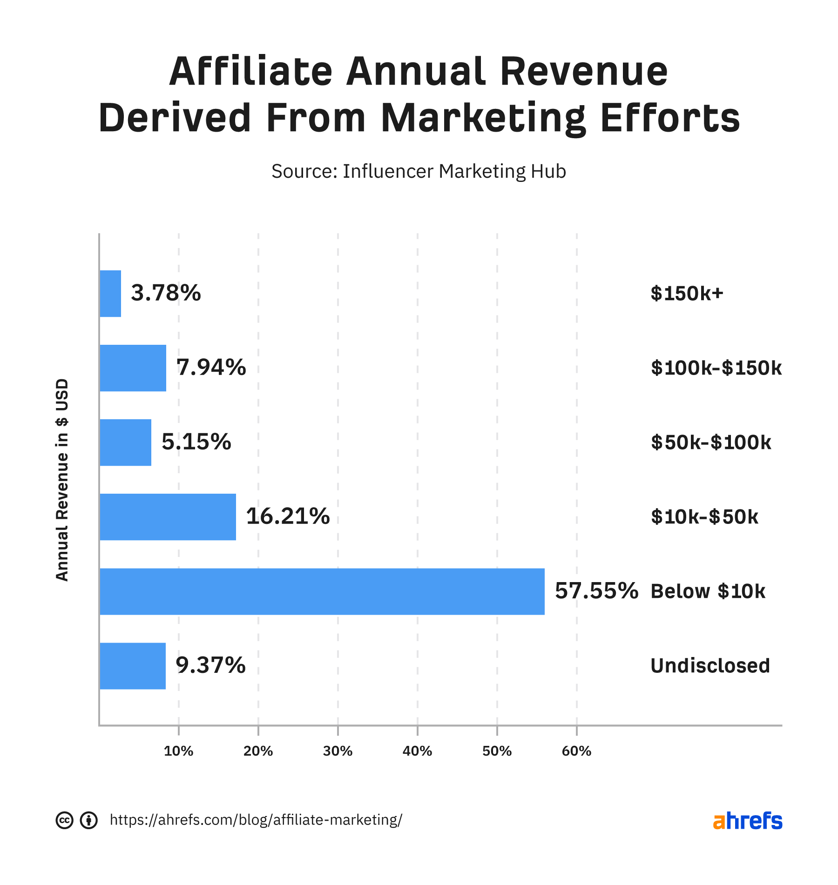

how do i make money online
In 2005, I mistakenly stumbled into a seminar where a 500L medicine student of Lautech was teaching “internet business opportunities” That was the first time I heard the phrase “make money online” and I immediately realized that this is an opportunity that could change my life forever. "How on earth does someone 'make money online'" I wondered, as I am certain many people too are wondering even now. Well, 15 years later, not only do I make money online, I have built businesses that have done millions online. I created this short report to help many people avoid some of my mistakes and get into the right path. So, lets get into it.First of all if you want to truly, really "make money online," there are are only two ways. its either you are marketing a product or you are redring a skill
what is marketing
To market a product online, you MUST have something to sale and you must learn how to sell it online. You do so by offering something of value, a product in exchange for money . You must choose something real, something that can grow and you must have the discipline/patience to learn and do work to grow it. in this course we are going to learn how to promote and sale other peoples product and earn a lot of money through it which is known as Affiliate marketing Affiliate marketing is where you promote another companys product or service. When someone purchases through your affiliate link, you earn a commission. These commissions are usually a percentage of the sale price or a fixed amount
how much do affiliate marketers make
Most affiliate marketers earn less than 200k per week. Thats according to a survey from Influencer Marketing Hub. Affiliate weekly revenue derived from marketing efforts Yet, roughly one in six (16.87%) make more than 500k per week or more. Matt Giovanisci is a good example of a high-earning affiliate. His site, Swim University, made $149,991 affiliate commissions in 2021. Keep in mind though that these people have done an excellent job building their brand. Its taken them years of hard work to reach this level. you need to put your effort to get a result
this some of our testimonies and withdrawals

how to get started with affiliate marketing
to get started with affiliate marketing you need a mentor. the truth is that mentors are cheatcode to success thats why the 72IG was created to guide you on every procedure you need to be a sucsessfull marketer. whether you are selling your personal product this course is going to take you to the next level by increasing your marketing skill
affiliate marketing tool
the 72IG
Tools are your friends in affiliate marketing. They help you do your job faster and easier. the only tool that will guide you on affiliate marketing is the 72IG
the 72IG covers variety of contents listed below
HOW TO SELL DIGITAL PRODUCTS USING
1. Audience-determine-products approach.......
2. Product-determine-audience approach .......
AUDIENCE AWARENESS..............................
CASE 1: Our audience determined the product. .....
CASE 2: Our product determined the audience. ....
How the lead generation works .....................
HOW TO BUILD A LANDING PAGE...........
NURTURE LEADS AND USE THEM TO GET MORE LEADS ..
SUMMARY & CONCLUSION.....................
2. Product-determine-audience approach .......
AUDIENCE AWARENESS..............................
CASE 1: Our audience determined the product. .....
CASE 2: Our product determined the audience. ....
How the lead generation works .....................
HOW TO BUILD A LANDING PAGE...........
NURTURE LEADS AND USE THEM TO GET MORE LEADS ..
SUMMARY & CONCLUSION.....................
Im one of those natural born salesmen who can sell ice to an Eskimo, oil to an Arab, pork to a rabbi, or anything else you can think of. But who really cares about that, right? I mean, unless you want to hire me to sell one of your products, my ability to close is basically irrelevant to you. Whatever the case, thats my gift: the ability to sell anything to anyone, in massive quantities; and whether this gift comes from God or from nature, I really cant say, although what I am able to say—with absolute certainty, in fact—is that I am not the only person who was born with it. There are a handful of others who are sort of like me. The reason they are only sort of like me has to do with another precious gift I possess, a gift thats infinitely more rare and infinitely more valuable, and that offers a massive benefit to everyone. Including you.
What is this amazing gift? Quite simply, its the ability to take people from all walks of life regardless of age, race, creed, color, socioeconomic background, educational status, and level of natural sales ability, and turn that person into a world-class closer almost instantly.You see, before I began teaching the system again, I spent two full years going line by line through its code—taking every last nuance and pushing it to an even higher level of operational proficiency, while ensuring that every last bit was grounded at the highest level of ethics and integrity.What I offer you on the following pages is a turnkey solution for applying the 72IG to any business or industry. For those of you in sales, or if you own your own business, this book will be a total game-changer for you. It will show you how to shorten your sales cycle, increase your closing rate, develop a steady stream of customer referrals, and create customers for life. In addition, it will also offer you a paint-by-number formula for building and maintaining a world-class sales force. And, for those of you who are not in sales, this book will be equally as valuable to you. You see, one of the costliest mistakes that “civilians” make is that they tend to think of sales and persuasion in traditional terms only, where theres a salesperson closing a deal. So, they ask themselves, “Since Im not in sales, whats the point of learning how to sell?” Meanwhile, nothing could be further from the truth. Even if youre not in “sales,” you still need to become at least reasonably proficient at sales and persuasion. Otherwise, youre going to find yourself living a severely disempowered life. Selling is everything in life. In fact, either youre selling or youre failing. Youre selling people that your ideas make sense, your concepts make sense, your products make sense: you could be a parent selling your kids on the importance of taking a bath or doing their homework; you could be a teacher selling your students on the value of education; a lawyer selling a jury on the innocence of your client; a pastor selling your congregation on the existence of God or Jesus of Mohammad or Buddha; a politician selling your constituency on the benefits of voting for a certain referendum—in short, selling applies to all people, and all aspects of life, both business and personal. After all, at some point in our lives, well all have to sell Again, it doesnt matter what line of work youre in or if its business or personal. Were always trying to convey our thoughts and ideas and hopes and dreams in a way that not only moves people to take action but that also gets us what we want in life too. Thats what ethical persuasion is all about; and without that one, linchpin skill, it is very difficult to achieve success, at any reasonable level, or live an empowered life. In fact, at the end of the day, thats what this book is really all about. By providing you with a simple, proven way to master the art of communication, youll be able to move through life with far greater personal power and live a far more empowered life. Just always remember the words of Spider-Mans uncle, from the first Spider- Man movie. “With great power,” he warned, “comes great responsibility.” This book will grant you that power.it doesnt matter whether you have a product or not. this course will broaden your knowledge on step by step procedures on how to sell digital products and make income as much as you want at the confort of your home i am also ofering you a bonus course =>
Importation/Ecommerce E-commerce is all about 3 things: (1) Searching for physical products that solve problems for people or help them get closer to their desires. You can source these products here in Nigeria or import them. (2) Buying the products at the lowest cost possible, importing them to Nigeria. (3) And using a genius marketing method to sell them for a good ROI. If you are going to run with this business model, make sure you do not run it like a lot of people. Run it as a proper business. Start with a huge and profitable audience/market. E.g. Fitness, babies (Moms), Women's fashion, Skin care Look for challenges people have in that market Find products on Aliexpress that solve those challenges - In fact, you will even come across many products on Aliexpress that fix challenges you do not know about. Buy the products for the lowest cost you can find (You may have to use an agent or other sites for this) E.g. Some products that sell for N$2 a piece can be gotten from 1688.com for far lesser Create a marketing system that allows you to pull in people who are interested in the type of products you are importing. You can advertise using Facebook, Instagram, Youtube, Google, Blogs Sell to them Sell to them repeatedly If you decide to take this to another level, you might even create a brand name and find companies that can help you create products with your brand name printed on them But you don't have to start with that. You can start importing with at least N50,000 or even lower."However the most important factor is for you to ONLY import products that people really want to buy." Personally, I don't import products until I have advertised it and gotten proof that it is a product that will sell. That is when I go ahead to buy it. Ecommerce requires a capital of at least N50,000 to get it started. I urge you to get the course inplement it and make your dream come to pass.
marketing @ kingsleys. how to make money online. i also have courses on web development
Article stats
monthly traffic 0
linking websites 1070
tweets 138
Share this article

Contact us